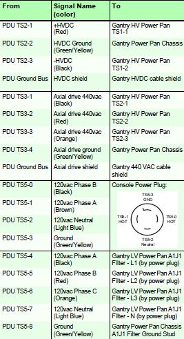
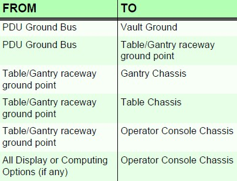
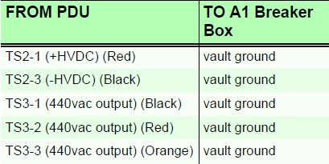

Operating Documentation
Direction 5193574-800, Rev# 22
LightSpeed 7.X Service Methods
Module Version 1.0, Version Date 4/22/10
Operating Documentation |
| Labor: | 1 person; 0.5 man-hour |
| Tools: | Digital VOM capable of reading 0.5 ohms |
| 50 ft of #18 wire | |
| 600 VAC meter leads |
| ||||
| Use and follow Lockout/Tagout procedures. Lock out wall power. |
1. Turn all PDU breakers to the OFF position. |  |
2. System Continuity Check: Verify that less than 1 ohm of resistance exists in the PDU connections to the gantry (HVDC Run #50, HVAC Run #51, LVAC Run #52) and console power plug (LVAC Run #53). | |
3. System Ground Check: Verify that less than 1.0 ohm of resistance exists between each of the system grounding locations. |  |
4. Site Ground/Continuity Check: Set an ohmmeter to the lowest scale and verify no continuity exists between the PDU TS2 and TS3 terminals (hot wires) and A1 breaker vault ground. |  |